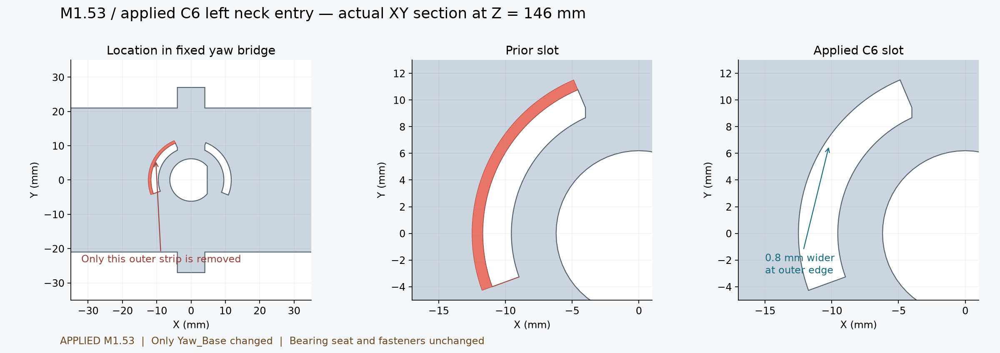

本页保留 M1.53 采用时的比较；当前总装为 M1.54，详见本次发布说明。
V1.2-M1.53 · 2026-10-07 · Yaw_Base 外边缘加宽 0.8 mm；不增加打印件或紧固件。
已核对仅固定偏航桥改变，其余 200 件原生零件保持。轴承座、孔位与硬件位置保持。

九条下部候选线路与当前模型的 1404 次分组有限姿态检查通过，名义净距下界达到 0.3 mm。主模型、STL、电子细模、预览及完整装配视频已同步。
完整线束仍待完成；本次只采用槽口，不同时采用候选线束及其固定件。PA12 实物配合与强度未验证，未制造放行。